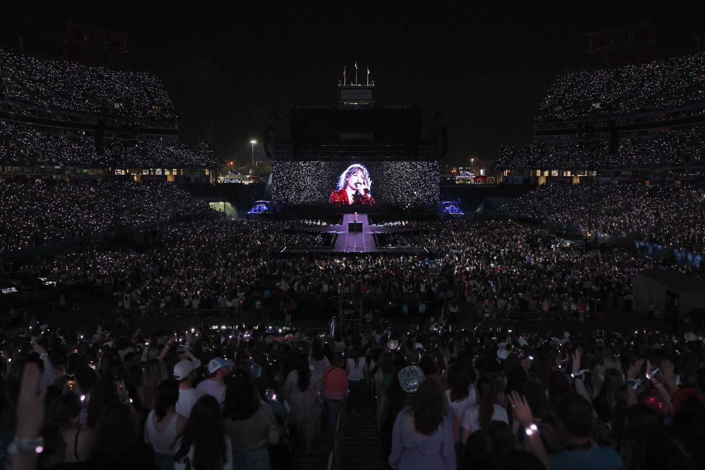
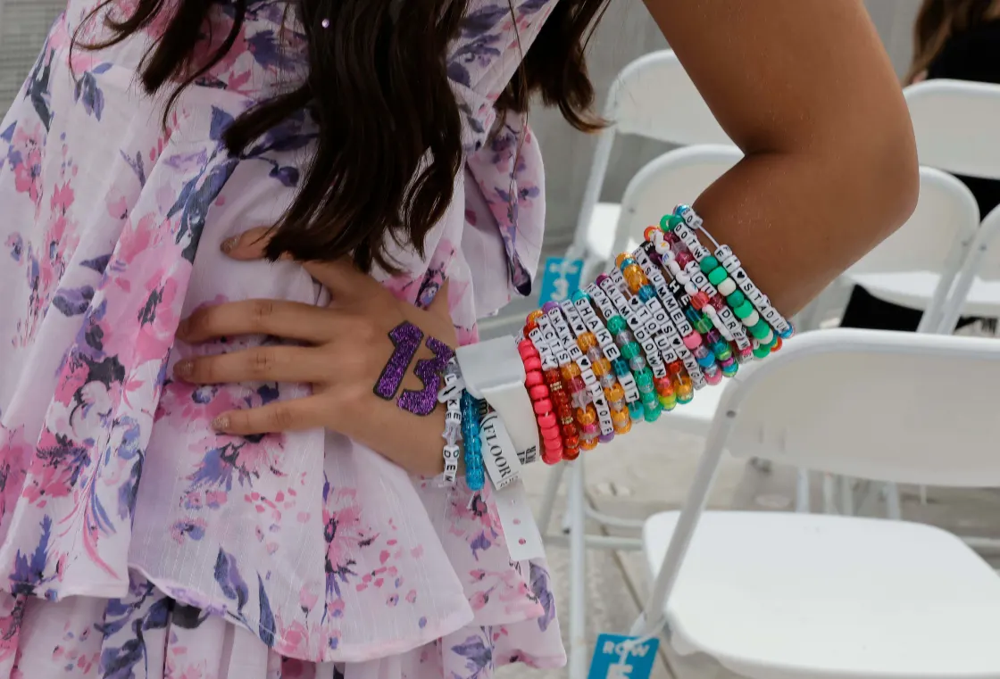
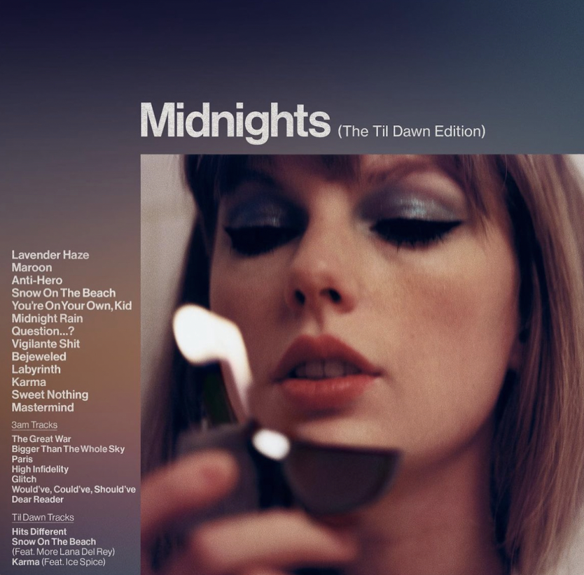
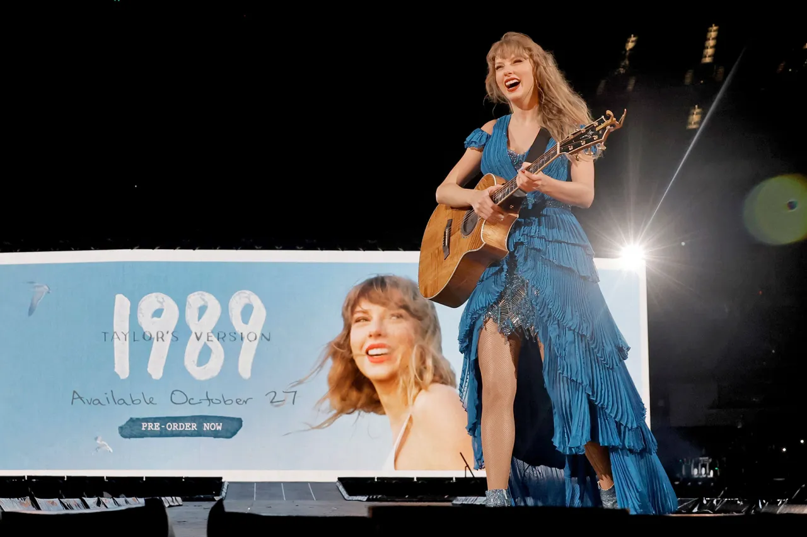

Photo, in order: John Shearer, John Shearer, Emma McIntyre, Kevin Mazur.
You don’t have to be a Swiftie to have been touched in some way by Taylor Swift’s Eras Tour, a stadium arena experience that kicked off in March. The tour, which pays homage to every era of the artist’s illustrious 17-year career, is set to become the biggest tour of all time only a third of the way through its run.
If you live in one of the 20 locales Swift, 33, performed at in the last five months, your city has likely seen a boost in revenue from the hundreds of thousands of attendees who traveled from near and far. If you don’t—or simply couldn’t snag tickets due to the cost or the now infamous Ticketmaster snafu—chances are you’ve seen clips of the three-and-a-half hour show from celebrities’ Instagram stories.
While there’s much to say about the music, costumes, and production, the impact of the Eras Tour is starkly reflected in the numbers: a projected gross of $2.2 billion in North American ticket sales alone, and hundreds of millions of streams, reaching a nearly 80% spike in those listening to her music catalog in the weeks after the tour kicked off.
After 53 shows, the first U.S. leg of the tour came to a close on Aug. 9. Swift originally announced 27 shows and has since extended the tour, adding new dates in cities like New Orleans, Indianapolis, and Toronto, which are all now anticipating a local economic boost. Eras is set to go international this month, starting with four shows in Mexico City, continuing its five-continent run through November 2024.
Swift’s tour is in a league of its own, even among legendary groups like the Rolling Stones who have been touring for decades, other major touring artists like Harry Styles and Beyoncé and contemporaries like Adele with sold-out Las Vegas residencies, as the singer-songwriter brings her mega tour directly to her dedicated fans in various cities for multiple nights.
The reasons behind the Eras Tour's unmatched success are many. Nora Princiotti, staff writer at The Ringer and co-host of the podcast of Every Single Album: Taylor Swift, attributes part of the tour’s success to the sheer depth and popularity of Swift’s music catalog. “I don't know that anybody envisioned a tour of this scale ever happening. She can go three and a half hours and just hit after hit after hit,” says Princiotti.

John Shearer
There’s also the timing: The tour has become the perfect outing for concert-goers itching for a post-pandemic live music immersive experience. “We are in an experience economy where people crave going out and participating in social events,” says Alice Enders, a music industry analyst at Enders Analysis and a former senior economist at the World Trade Organization. “It's no surprise that people are flocking to this Eras Tour experience in what is increasingly an otherwise digital environment we live in.”
And fans are acutely aware of Swift being connected to her body of work in a way that few artists are—she writes all her songs, has been protective of her music in the streaming boom, and is now releasing re-recordings of her discography to reclaim their master rights. It all adds up to a music industry enterprise the likes of which the world has never seen.
Analysts estimate that the Eras Tour will likely surpass the $1 Billion mark next March, while Swift is touring internationally. If this projection holds true, she will achieve the milestone of the biggest tour in music history, surpassing Elton John's multi-year farewell tour, which wrapped up earlier this summer and holds the current record of $939 million. The Eras Tour would then continue for another seven months before concluding in November of 2024 in Toronto—that is, unless rumors that Swift will release more dates come to fruition.
But the money goes far deeper than just net profits. The Eras Tour is projected to generate close to $5 billion in consumer spending in the United States alone. “If Taylor Swift were an economy, she’d be bigger than 50 countries,” said Dan Fleetwood, President of QuestionPro Research and Insights, in a story for GlobalNewsWire. On the opening night in Glendale, Ariz., the concert brought in more revenue for local businesses than Super Bowl LVII, which was held back in February in the same stadium. To use that event as a comparison, Swift has been performing the equivalent of two to three Super Bowls every weekend for the past five months (and six of seven nights at her last round of shows in Los Angeles).
Typically, every $100 spent on live performances generates an estimated $300 in ancillary local spending on things like hotels, food and transportation. But for the Eras Tour, Swifties are taking this to the next level, dropping an estimated $1,300-$1,500 on things like outfits and costumes, merchandise, dining, and travel—boosting local economies by hundreds of millions of dollars in one weekend.
The Illinois governor credited the musician with reviving the state’s tourism industry after her three nights in Chicago. She was even mentioned in a report by the Fed, crediting her with fueling the national tourism industry.
The enthusiasm is so great that cities along her tour have experienced supply shortages. For one example: Swift mentions “friendship bracelets” in the song You’re on Your Own, Kid, off her most recent album Midnights. Swifties have taken this and run with it. Every concert is filled with tens of thousands of fans wearing and exchanging beaded bracelets spelling out the names of Swift songs and colloquialisms all the way up their arms. While this bracelet economy has brought new revenue to local businesses, businesses have also reported bead and sequin shortages.

Kevin Winter
This enthusiasm comes despite broader economic challenges. “There’s a cost of living crisis and people are still forking out thousands of dollars to see Taylor Swift,” says Enders. Despite this, a national study of concertgoers shows that even with an average of more than $1,300 spent per event, 91% said they would go again.
Not only is the Eras Tour an economic boon, but it has also become a cultural phenomenon. Every city Swift has visited over the course of the tour so far has pulled out all of the stops for her: Minneapolis was renamed “Swiftie-apolis;” Santa Clara, Calif., made her the honorary mayor; the New Jersey governor named the state sandwich of New Jersey after her. Now world leaders like the Chilean President, the mayor of Budapest, and Canadian Prime Minister Justin Trudeau are asking her to bring the tour to their countries. The FBI tweeted out a Taylor Swift pun in July.
“We're in the Taylor Swift cinematic universe at any given moment."
- Charlie Harding, music journalist
Princiotti says that in her role as a fan, it’s been both exciting and strange to see such a global embrace of Swift. “For as big as she has been for so long, even if this is a new peak, I think a lot of fans feel like they've spent their entire lives defending their love of her,” she says. “And there's something very strange in seeing the U.S. government, or all of these various municipalities, just desperate to get a little sliver of the clout that comes from just being somewhat associated with Taylor Swift.”
Donning beaded bracelets and drawings of the figure “13” (Swift’s favorite number) on their hands, many Swifties attending her shows are just as eager to secure exclusive tour merchandise. Thousands of them line up for hours in advance to snag the coveted merch of $75 hoodies, $55 long-sleeve shirts and $45 T-shirts.
Fans are even clamoring to get their hands on physical copies of Swift’s music. “Streaming has taken over the purchase of the physical album product, but Taylor Swift is among the artists that still makes money from vinyl and CDs because they’ve become collector's items for her fans,” says Enders.
Swift creates different editions, reissues, and extras that make fans want to collect more and more copies of her albums in different forms. For her Midnights album, four of the five different album covers fit together to form a clock face, while another comes with bonus tracks, making buying different versions of the album a necessity for true fans. And some diehards admit they’ve purchased the vinyl versions without even owning a record player.
Midnights was the top-selling vinyl record in 2022, with 945,000 copies sold, making it the best-selling physical album since 1991. One out of every 25 vinyl records sold last year was a Taylor Swift album, and she is the first artist in history to simultaneously occupy at least seven of the top 10 spots on the Vinyl Albums chart. For her newest re-recorded album set to come out in October, 1989 (Taylor’s Version), Swift has already released multiple vinyl and special edition deluxe CDs for pre-order on her website, each with different cover art and unique additions.

Taylor Swift Store
Swift’s mega tour isn’t the only thing she’s dominated. Her streaming and chart success from her constant release of new and re-recorded music (six going on seven albums in the last three years) adds to the vast project that is Swift’s domination of the global music industry.
“This moment for her is like an excellent HBO miniseries that’s not just a primary narrative, but also a B plot and a C plot where the main narrative is the tour, but underneath that we have the album re-recordings,” said Charlie Harding, music journalist and co-host of the podcast@SwitchedOnPop.
Swift’s “Taylor’s Version” re-recording project is an effort she started in 2019, when music mogul Scooter Braun bought record masters for her entire discography from her prior music label Big Machine Records. So far, Swift has released three re-recorded albums: Fearless (Taylor’s Version), Red (Taylor’s Version), and Speak Now (Taylor’s Version), with the re-recorded editions all including additional “vault songs” that didn’t make it to the final versions of their original albums.
Fans have embraced Swift’s attempt to claim her music back, opting to stream the re-recordings more than the original versions, thus dethroning the catalog once owned by Braun. (He sold the rights to Shamrock Holdings in November 2020.)
Swift’s project has broken several music records in the wake of the album re-releases. Her latest re-recorded album, Speak Now (Taylor’s Version), a recording of her 2010 studio album, made history when it went straight to the top of the charts as her 12th no. 1—making her the woman with the most no. 1 albums and the first person with five albums simultaneously on Spotify’s Top Ten Albums Global chart.
And Swift’s Eras tour is directly linked to the success of her streaming. “The live music performance is actually a driver to the streaming platforms,” says Enders. “When you go to see an Eras show you’re rediscovering Taylor Swift and you go back to listen to her music when you get home and in the days after.”
So far, Swift is halfway through her re-recording project, with three albums still to come. Swift announced on Aug. 9, when closing out her six-show residency at Los Angeles’ So-Fi Stadium, that her next re-recorded album will be her synth pop 1989 album, due Oct. 27.

Kevin Winter
“It's kind of like the Marvel Cinematic Universe,” says Harding, using another onscreen metaphor. “We're in the Taylor Swift cinematic universe at any given moment. There's endless amounts of discussion to be had at every level of this world that she's created, and each one I think serves a different audience.”
With more tour stops on the horizon and three more albums to re-release, Swift isn’t slowing down any time soon. The music sensation has even exceeded her own expectations. On the last night of the first U.S. leg of the tour, Swift told the crowd, “I figured it would be fun, but I did not know it would be like this.”
Harding says it’s not just a recipe for financial success, but for spectacular longevity. “Taylor Swift has the capacity to be around for a whole lifetime,” he says. “I think the big question I have is: where do you go from here?”
Correction, Aug. 24:he original version of this story stated that Scooter Braun still owns the master rights to Swift's first six albums. Braun sold the rights to Shamrock Holdings in November 2020.